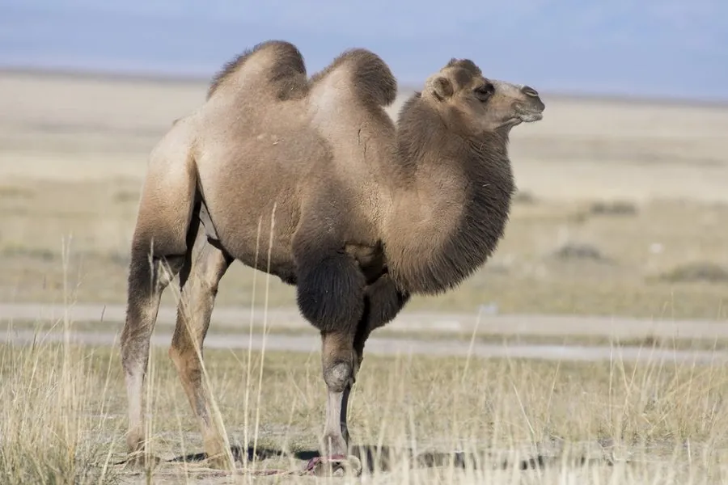

哺乳动物 · 动物界
双峰驼 Camelus bactrianus

中亚荒漠地区的大型家畜，双峰储存脂肪，既耐渴又耐寒，能在极端干旱的环境中长途跋涉运输物资。
- 分类
- 门脊索动物门纲哺乳纲目偶蹄目科骆驼科属骆驼属
- 栖息环境
- 中亚与蒙古的干旱荒漠、戈壁和草原，依赖零星水源与盐生植物
- 地理分布
- 中国西北、蒙古及中亚的家养种群，野生种群仅存新疆与蒙古荒漠
- 保护级别
- 暂无评估（家养物种）；其野生近亲野骆驼为 IUCN 极危（CR）、中国国家一级保护动物
物种志
双峰驼体长 2.2–3.5 米，肩高 1.8–2.3 米，体重 450–700 kg。它全身覆沙褐色至深棕色的厚毛，颈部腹侧毛长，两个驼峰储存皮下脂肪；眼睑有三层，鼻孔可以闭合，脚掌宽大如垫，适合在松软沙地上行走。
双峰驼是中亚干旱地区长期驯化的家畜，家养个体广泛分布于中国西北、蒙古和中亚，野生种群仅存于中国新疆与蒙古的荒漠。它能耐受 -30℃ 至 40℃ 的温差，可数周不饮水，取食梭梭、骆驼刺等盐碱地植物，长途跋涉时每天可行 30–40 km。雄性在发情期会变得好斗，雌驼妊娠期约 13 个月，每胎 1 仔。驼峰脂肪耗尽时会变得柔软下垂。家养双峰驼数量稳定，但其野生近亲野骆驼被列为极危。
形态与习性
- 食性梭梭、骆驼刺等盐生植物，可数周不饮水
- 体长2.2–3.5 m，肩高 1.8–2.3 m
- 体重450–700 kg
- 寿命约 40–50 年
- 繁殖雄性春季发情，妊娠期约 13 个月，每胎 1 仔
- 耐温范围-30℃ 至 40℃
- 驼峰储存脂肪，脂肪耗尽时会变软下垂
趣味知识
- 驼峰里储存的是脂肪而非水，脂肪耗尽后会软软地垂下去。
- 双峰驼可以数周不饮水，靠代谢脂肪和回收尿液中的水分。
- 它有 3 层眼睑和可闭合的鼻孔，能抵御沙暴。
- 长途跋涉时，双峰驼每天可以行走 30–40 km。